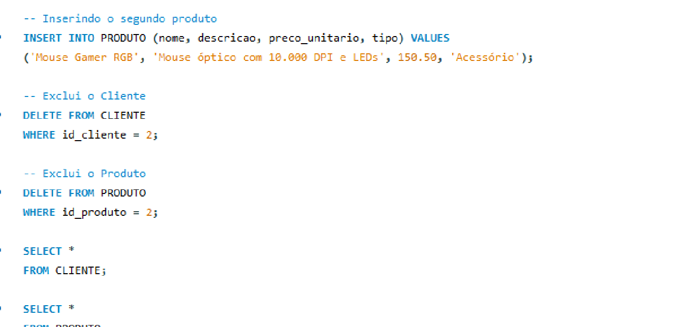

Dando continuidade à evolução do esquema criado, esta etapa consistiu na implementação física da arquitetura de vendas e na manipulação direta dos registros de dados. O alicerce tecnológico utilizado foi a SQL (Structured Query Language), linguagem padrão para gerenciamento, consulta e manipulação de informações em bancos de dados relacionais. Através dela, foi estruturada a base física das tabelas (utilizando comandos DDL) e implementadas as operações transacionais diárias de um sistema comercial moderno (CRUD), garantindo a persistência, leitura e atualização contínua do estado das informações.

A implementação foi desenvolvida no ambiente MySQL Workbench, sendo o script dividido em três frentes técnicas fundamentais:
Instanciação das tabelas (CLIENTE, PRODUTO, PEDIDO, ITEM_PEDIDO) aplicando rigorosas regras de integridade. Implementou-se o auto incremento para as chaves primárias e o engessamento relacional através das Chaves Estrangeiras (FOREIGN KEY).
Execução de rotinas de inserção de dados (INSERT) populando as tabelas, utilização do comando DELETE para remover registros específicos e o comando UPDATE para aplicar lógicas de negócio em lote (como o reajuste dinâmico do preço unitário).
Extração de dados através de comandos SELECT com filtros específicos. Foram aplicadas funções de agregação (MIN, MAX, COUNT, AVG) para simular a extração de relatórios gerenciais, e implementou-se um índice (INDEX) para otimizar o custo computacional de buscas textuais no sistema.